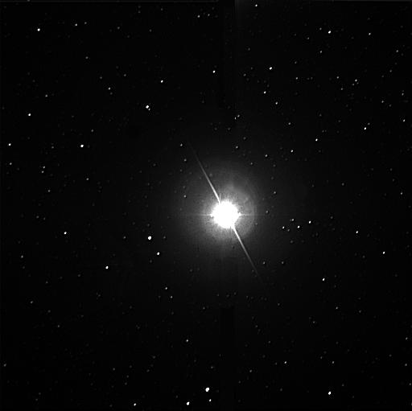

О космос
.jfif)
Косми́ческое простра́нство, ко́смос (др.-греч. κόσμος «мир», «Вселенная») — относительно пустые участки Вселенной, которые лежат вне границ атмосфер небесных тел. Космос не является абсолютно пустым пространством: в нём есть, хотя и с очень низкой плотностью, межзвёздное вещество (преимущественно молекулы водорода), кислород в малых количествах (остаток после взрыва звезды), космические лучи и электромагнитное излучение, а также гипотетическая тёмная материя.
Звёзды
Сириус

Си́риус (лат. Sirius), также α Большого Пса (лат. α Canis Majoris) — звезда созвездия Большого Пса. Звезда главной последовательности, спектрального класса A1. Ярчайшая звезда ночного неба; её светимость в 25 раз превышает светимость Солнца, при этом не является рекордной в мире звёзд — высокий видимый блеск Сириуса обусловлен его относительной близостью к Земле. Наблюдаема из любого региона Земли, за исключением самых северных её областей. Находится на расстоянии 8,6 св. лет от Солнечной системы и является одной из ближайших к Земле звёзд.
Альтаир

Альтаи́р[1] (α Aql / Альфа Орла) — самая яркая звезда в созвездии Орла и 12-я по яркости звезда на небе. Видимый блеск — 0,77m. Название происходит от арабского «ан-наср ат-таир» (араб. النسر الطائر), означающего «парящий орёл».
Альтаир — одна из вершин «летне-осеннего треугольника», который виден в Северном полушарии в летние и осенние месяцы. Вместе с бетой и гаммой Орла он образует хорошо известную линию звезд, которую иногда называют Семейство Орла или Вал Орла.
Вега
Ве́га (α Лиры, α Lyr) — самая яркая звезда в созвездии Лиры, пятая по яркости звезда ночного неба и вторая (после Арктура) — в Северном полушарии, третья по яркости звезда (после Сириуса и Арктура), которую можно наблюдать в России и ближнем зарубежье. Вега находится на расстоянии 25,3 светового года от Солнца и является одной из ярчайших звёзд в его окрестностях (на расстоянии до 10 парсек).
Солнце
Со́лнце (астр. ☉) — одна из звёзд нашей Галактики (Млечный Путь) и единственная звезда Солнечной системы. Вокруг Солнца обращаются другие объекты этой системы: планеты и их спутники, карликовые планеты и их спутники, астероиды, метеороиды, кометы и космическая пыль.
Комментарии